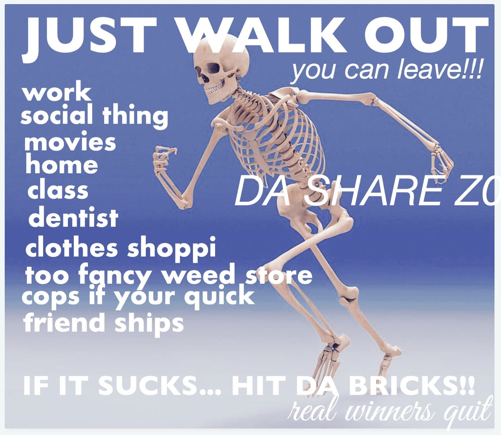
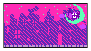
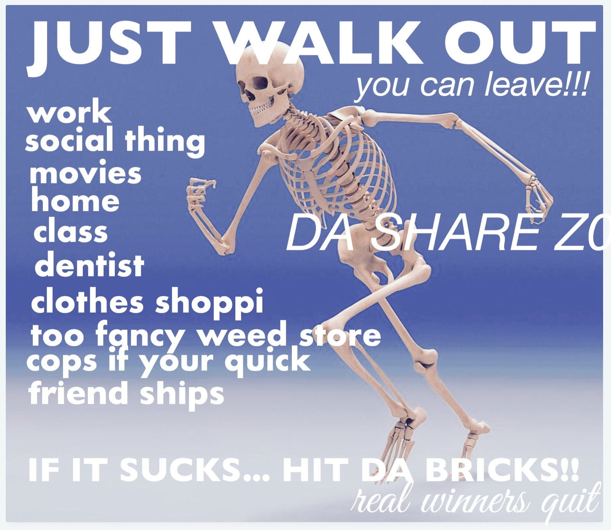
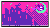

Manifesto 2: The Return of Manifesto
Manifesto 2: The Return of Manifesto
I believe that I was hasty with my first manifesto. I do firmly believe in the principles I laid out previously, but it was limited in scope. I'd like to take expand on it, so here I am. This isn't a revised version. Instead, this as Part 2. The homogenization of the modern internet disturbs me. I remember when the internet felt like a wild space where no one's voice mattered more than any other. At least, it did for me. You could find weird corners of the internet all over the place, fully customizable. But some said the internet was just a fad. So authorities didn't prioritize policing it to hell and back. The internet wasn't dominated by the prescences of tech giants. But now every link leads back to Reddit, Facebook, Twitter, or another site owned and controlled by a faceless tech megacorp. Because of their need to maintain a beautified public image, our ability to express ourselves in these spaces has eroded.
This reality disturbs me on a visceral level, but I don't think the situation is hopeless. I feel that if we take the time to assert our right to individuality by building our own spaces and forming our own communities, we can take our power back. The internet can be colorful and free, and all we need to do is cultivate our plots of land. The great thing is that anyone can pick up HTML and CSS, and with a little work, have a fantastic working site in little time. No, I'm not saying my site is well-built. I barely know what the fuck I'm doing, as of the time of writing. But for the first time in my life I'm just putting my not-so-perfect work out into the world and showing my actual self.
The internet feels so curated. I just wanna throw my brain onto a canvas and say "fuck it, this is me.". Currently, this site is a mess. But I'm new - it should absolutely be a mess! I'm proud of my mess. I don't want to work everything into a perfect finish. That'll never happen, as I've learned time and time again. I'll learn how to make it better over time. And I'll always keep copies of my work as it grows, and keep as much of it accessible as I can. I don't care about a final product to show off anymore. I want my little corner of the internet to tell a story. I want it to show how I've changed over time. Who I am now and who I was. I shouldn't delete my past self because I might not have been correct. That's all a part of the process, and it deserves to be celebrated.
The more I learn about the digital space, the more it fascinates me. It's such a powerful and complex force, one could treat it like an entirely new dimension. A space for us to create our own realities and communities, limited only by our imaginations and ability to solve problems inside of it. I want to create my own spaces, and anyone can visit them. I've become so inspired to learn as much as I possibly can about how this space works. I want to create my own games and tools. And silly applications. And serious applications. There's so much to soak in. But damn! It's a fun ride to be on. And I hope more people can begin to look at life less like a race to a finish line. It's so much better to slow the hell down and just enjoy life.
Basically, I'm just here to try and create something cool. It doesn't have a real purpose, it's just something I have fun with. We should all find a place in our lives where we can find joy in creating. And we should remind ourselve
©2024 Viihna (Voidfucker) | Contact Info

 


